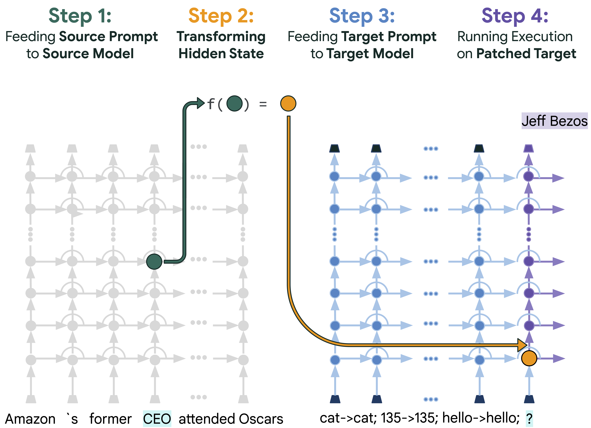
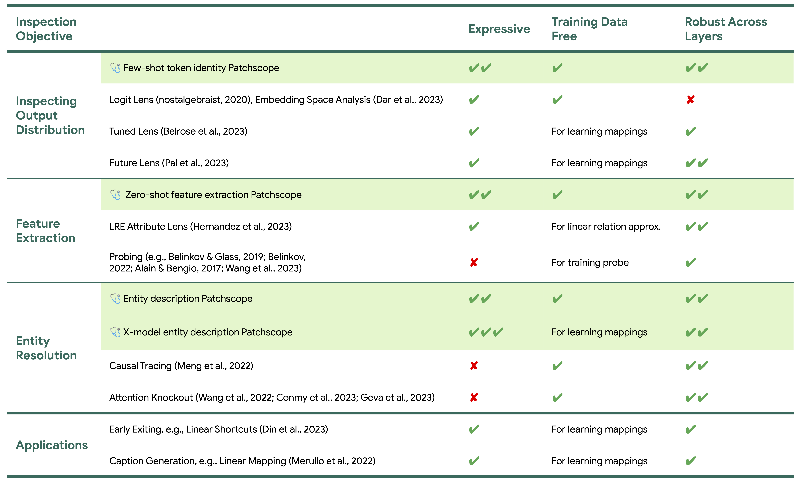
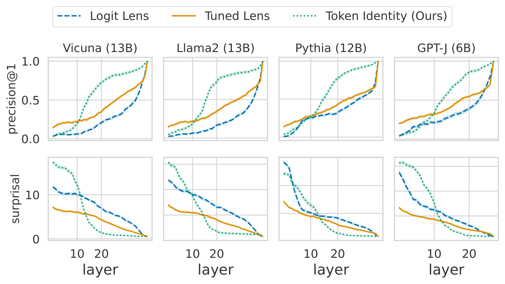
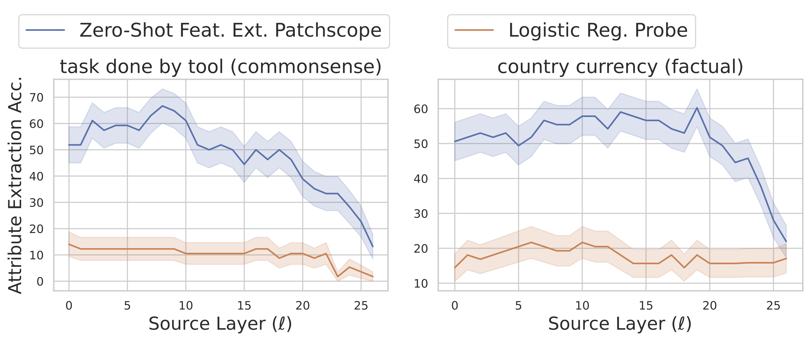
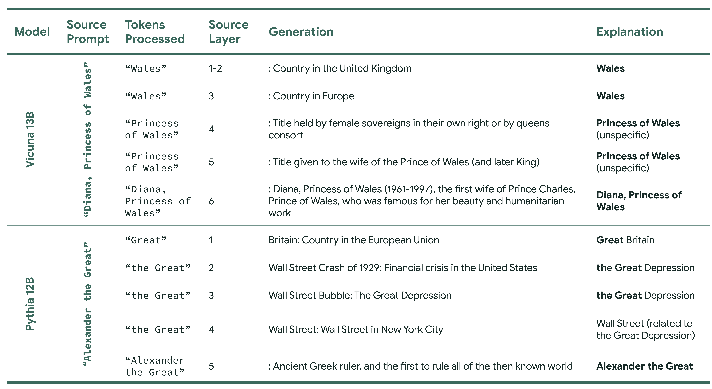
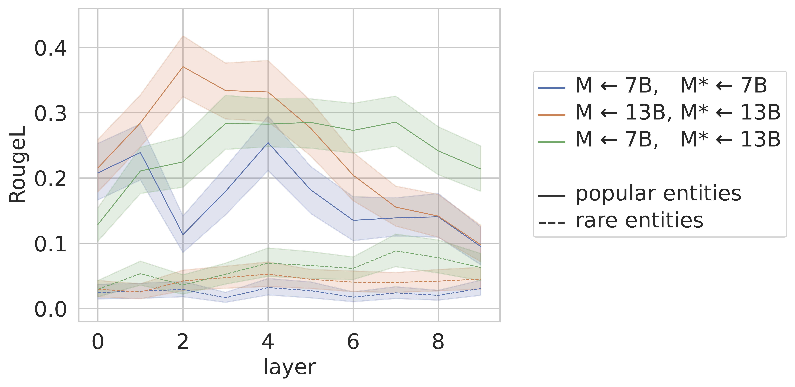
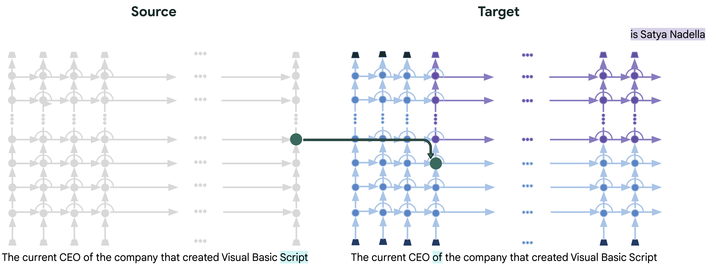

Inspecting the information encoded in hidden representations of large language models (LLMs) can explain models' behavior and verify their alignment with human values.
Given the capabilities of LLMs in generating human-understandable text, we propose leveraging the model itself to explain its internal representations in natural language.
We introduce a framework called Patchscopes and show how it can be used to answer a wide range of questions about an LLM's computation.
We show that prior interpretability methods based on projecting representations into the vocabulary space and intervening on the LLM computation can be viewed as instances of this framework.
Moreover, several of their shortcomings such as failure in inspecting early layers or lack of expressivity can be mitigated by Patchscopes.
Beyond unifying prior inspection techniques, Patchscopes also opens up new possibilities such as using a more capable model to explain the representations of a smaller model, and unlocks new applications such as self-correction in multi-hop reasoning.
Patchscopes can be configured to answer a wide range of questions about an LLM's computation. Many prominent interpretability methods can be cast as its special instances, and several of their limitations such as failure in inspecting early layers or lack of expressivity can be mitigated with a new Patchscope.
Additionally, its generality enables novel inspection possibilities and helps address questions that are hard to answer with existing methods. For example how do LLMs contextualize input entity names in early layers? This is where vocabulary projections mostly fail and other methods only provide a binary signal of whether the entity has been resolved, at best. We present a Patchscope that verbalizes the gradual entity resolution process.

We show that a simple few-shot token identity Patchscope works very well, significantly better than mainstream vocab projection methods across multiple LLMs, from layer 10 onwards.

With Patchscopes, we can decode specific attributes from LLM representations, even when they are detached from their original context. Despite using no training data, a zero-shot feature extraction Patchscope significantly outperforms linear probing in 6 out of 12 factual and commonsense reasoning tasks, and works comparably well to all but one of the remaining six.

How LLMs contextualize input entity names in early layers is hard to answer with existing methods. This is where vocab projection methods mostly fail and other methods only provide a binary signal of whether the entity has been resolved. However, a few-shot entity description Patchscopes can verbalize the gradual entity resolution process in the very early layers.

We show that you can even get more expressive descriptions using a more capable model of the same family to explain the entity resolution process of a smaller model, e.g., using Vicuna 13B to explain Vicuna 7B.

We also show a practical application, fixing latent multi-hop reasoning errors. Particularly, when the model is correct in each reasoning step, but fails to process their connection in-context, we show that our proposed Patchscope improves accuracy from 19.57% to 50%.

@misc{ghandeharioun2024patchscope,
title={Patchscopes: A Unifying Framework for Inspecting Hidden Representations of Language Models},
author={Ghandeharioun, Asma and Caciularu, Avi and Pearce, Adam and Dixon, Lucas and Geva, Mor},
year={2024},
eprint={2401.06102},
archivePrefix={arXiv},
primaryClass={cs.CL}
}